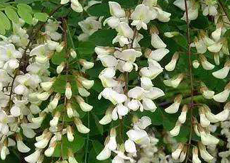

Specie: Styphnolobium japonicum
Taxonomy: Fabaceae; Papilionoideae; Cladrastis clade; Styphnolobium
Abbr: Sja
Level: Chromosome
chromosome number: 2n=2X=22

Introduction: Styphnolobium japonicum, the Japanese pagoda tree (also known as the Chinese scholar tree and pagoda tree; syn. Sophora japonica) is a species of tree in the subfamily Faboideae of the pea family Fabaceae. It was formerly included within a broader interpretation of the genus Sophora. The species of Styphnolobium differ from Sophora in lacking the ability to form symbioses with rhizobia (nitrogen fixing bacteria) on their roots. It also differs from the related genus Calia (mescalbeans) in having deciduous leaves and flowers in axillary, not terminal, racemes. The leaves are alternate, pinnate, with nine to 21 leaflets, and the flowers in pendulous racemes similar to those of the black locust. Styphnolobium japonicum is native to China; despite the name, it was introduced in Japan. It is a popular ornamental tree in Europe, North America and South Africa, grown for its white flowers, borne in late summer after most other flowering trees have long finished flowering. It grows to 10–20 m tall with an equal spread, and produces a fine, dark brown timber.
Distribution: Cape Provinces, Czechoslovakia, Egypt, France, Free State, Hungary, India, Iraq, Japan, Kenya, Kirgizstan, Korea, Krym, New York, North Caucasus, Northern Provinces, Pakistan, Romania, South European Russi, Tadzhikistan, Transcaucasus, Turkmenistan, Ukraine, Uzbekistan, Vietnam, West Himalaya, Yemen, Zimbabwe